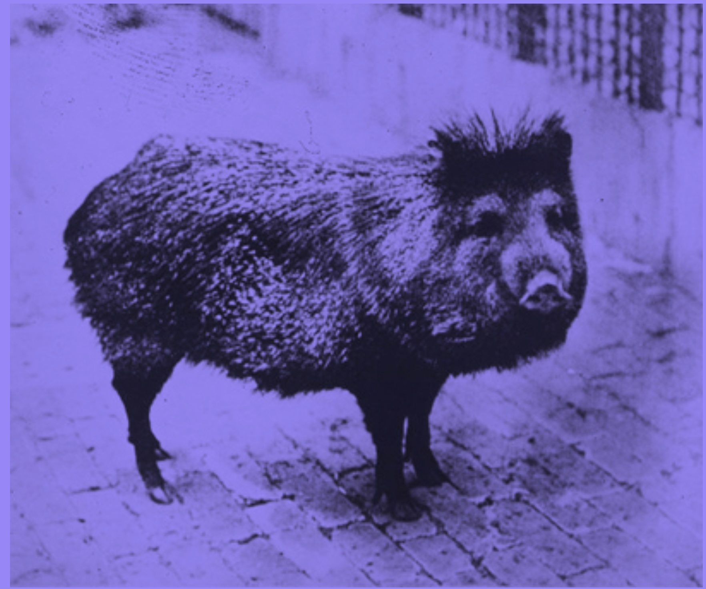

| Saturday, October 10 | Sunday, October 11 | |
|---|---|---|
| 9:00–10:00 | Keynote: Thomas Icard |
The structure of multidimensional concepts Ilaria Canavotto, Fabrizio Cariani, and Eric Pacuit Comments: Brian Hedden |
| 10:20–11:20 | Answering together Tomas Zyglewicz and Xander MacSwan |
Conversational trust Justin D'Ambrosio Comments: Melissa Fusco |
| 11:40–12:40 | Orthogonal knowledge Joshua Pearson, Ginger Schultheis, and Richard Roth |
Relevant alternatives in guessing Leo Yang Comments: Ben Holguín |
| Lunch (catered in the 6th floor lounge) | ||
| 2:00–3:00 | Knowledge and chance Jeremy Goodman Comments: Dmitri Gallow |
Coordination without role neutrality Giulia Grazzini |
| 3:20–4:20 | How to be a Leibnizian Lingzhi Shi |
Rational inquiry amidst uncertain priors Yasha Sapir Comments: Miriam Schoenfield |
| 4:40–5:40 | Correlation aversion Weng Kin San |
Keynote: Sophie Horowitz |
| 6:30 | Dinner, Moustache Pitza | The end |